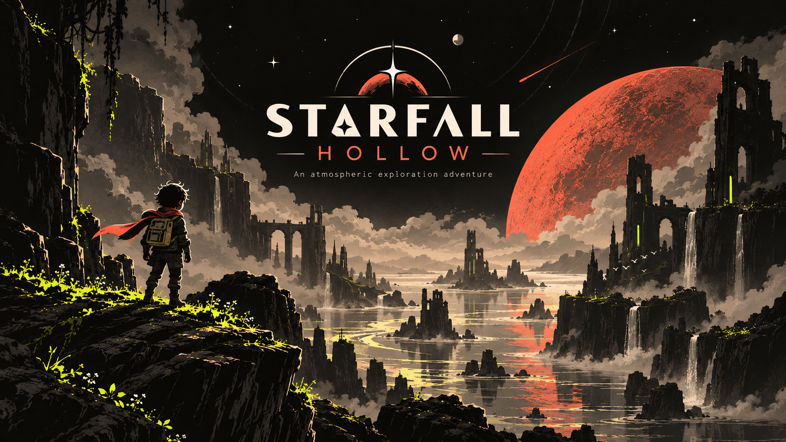

Starfall Hollow
A világ rég elfeledett titkokat őriz a vörös sziklák között. A bolygó fénye minden éjjel végigsöpör a tájon, miközben az ősi mechanizmusok halkan zümmögnek. Te vagy az utolsó Vándorok egyike, aki vállalja a veszélyes utat a mélységbe, ahol a csillagok hullása több mint legenda.